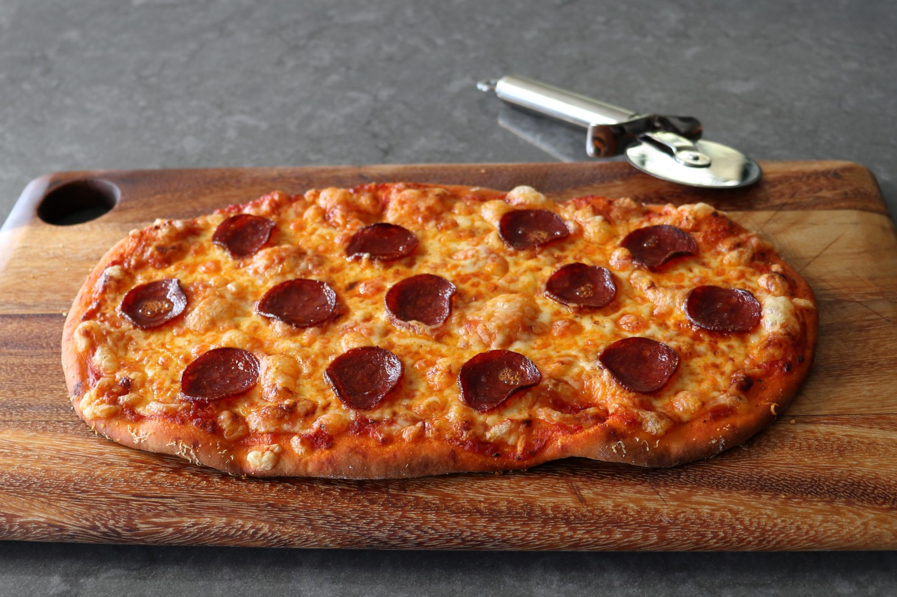

Flash Pizza

Ingredients
Dough:
- 2 cups self-rising flour, or more as needed
- 1 ½ teaspoons white sugar
- 2 tablespoons finely grated Parmigiano-Reggiano cheese
- 1 tablespoon olive oil
- 1 cup plain Greek yogurt
- 1 teaspoon water, or as needed (Optional)
Toppings:
- 2 tablespoons cornmeal, divided
- ⅔ cup pizza sauce, divided
- 8 ounces low-moisture mozzarella cheese, shredded
- ¼ cup finely grated Parmigiano-Reggiano cheese, divided
- 26 slices pepperoni, divided
- 2 teaspoons olive oil, divided
Steps
- Mix 2 cups self-rising flour, sugar, and Parmigiano-Reggiano cheese for dough in a
bowl until well combined. Add olive oil and Greek yogurt and mix with a spoon until a
shaggy dough forms. Clean off the spoon and mix the dough with your hands until it
mostly comes together.
- Transfer dough to a work surface and continue pushing it together until it smooths
out. It will be dry; don't be tempted yet to add more liquid. Knead dough until
smooth and elastic, 3 to 4 minutes, only adding a teaspoon or two of water or flour if
absolutely necessary. Cut dough into two equal pieces.
- Line a rimmed baking sheet with parchment paper and sprinkle 1 tablespoon
cornmeal over the surface.
- Roll one piece dough on a lightly floured surface to an 1/8-inch-thick rectangle.
Transfer to the prepared baking sheet.
- Top dough with ½ of the pizza sauce, spreading it almost, but not quite all the way, to
the edges. Sprinkle ½ of the mozzarella over the sauce, then ½ of the Parmigiano-
Reggiano over top. Arrange ½ of the pepperoni slices over the cheese, then drizzle 1
teaspoon oil over top.
- Bake in the center of the preheated oven until crust is beautifully browned and
toppings are bubbly, about 15 minutes. Transfer to a wire rack and let sit for 5
minutes before slicing and serving.
- As soon as you remove the pizza from the oven, repeat Steps 3 to 6 to top and bake
second pizza.
Nutrition Facts
Per Serving: 619 calories; fat 28.3g; cholesterol 67.8mg; sodium 1725.4mg; carbohydrates
59.1g; protein 29.7g.